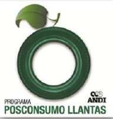
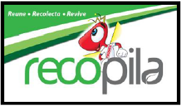
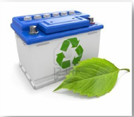
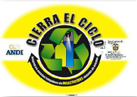

POSCONSUMO
Los residuos resultantes del uso de productos, aparatos o bienes una vez se dañana o no se pueden usar mas, siendo desechados por los consumidores,se conveierten en residuos de pos consumo.

Homecenter Armenia, como parte de su contribucion al medio ambiente hace parte del programa "Posconsumo LLantas" de la ANDI quien es la vocera en el plan nacional para la recoleccion de las mismas,y encargada de dar cumplimineto a la "Resolucion 1457 del 20 de julio de 2010".
Homecenter Armenia realiza entregas de aproximadamente 2160 unidades de llantas al año que equivalen a un peso aproxiamado de 4320(kg) .
Las llantas que se recojen son procesadas de una forma ambientalmente adecuada, para la generacion de nuevas materias primas.
Home center Armenia, pensando en los colombianos y su preocuapcion por el medio ambiente hace parte del programa "Recopila", en Homecenter Armenia puedes encontrar puntos de recoleccion de pilas en los contenedores de programa recopila.
Si depositas pilas en la basura estas va a para a rellenos sanitarios contaminando los suelos.
No tires a la basura, llevalas a los contenedores


Parte fundamental de nuestro carcenter es la recolecciones de las baterias que se cambian dentro de las instalaciones, un punto mas de el plan de posconsumo de Homecenter Armenia.
Las baterias son recolectadas por los proveedores segun la marca Bosch (Innovateq) o Willard (Peláez Hermanos).
Por cumplimiento de la "Resolucion 693 de 2007" Homecenter Armenia y por medio del programa de posconsumo "Cierra el Ciclo" gestionado por la ANDI y respaldada por empresas del sector privado que hacen parte de la distribucion y venta de insectisidas. Dispone de un contenedor amarillo, los cuales son identificados como puntos amarillos para el deposito de envases de insectisidas vacios.
Estos embaces son unicamente manipulados por el operador logistico del programa Cierra el Ciclo, quienes los recojen y les dan disposicio final adecuada.

Haciendo parte de este gran programa posconsumo "Lumina" de residuos de iluminacion y de acuerdo a la "Resolucion 1511 de 2010" , Homecenter Armenia da su aporte a la responsabilidad ambiental, con la disposicion los contenedores lumina, recolectando aproximadamente 240 Kg anuales de estos residuos.